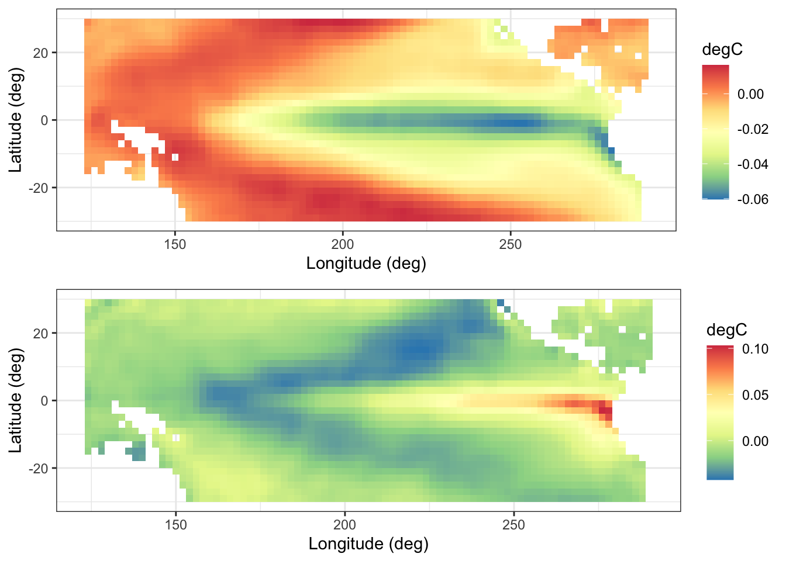
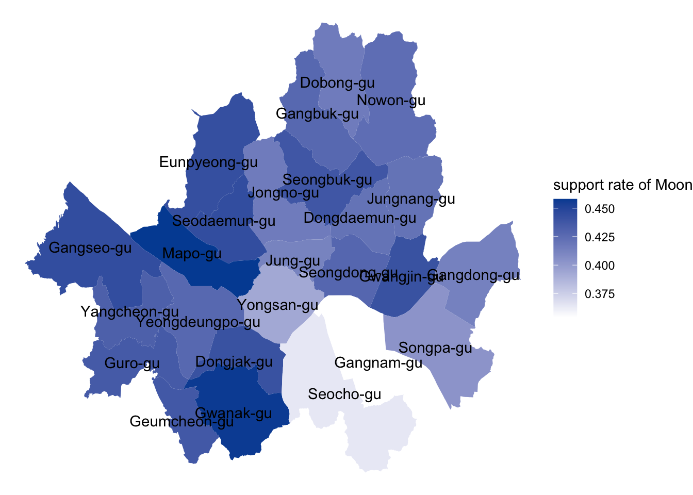

Chapter 4 Descriptive Spatio-Temporal Statistical Models
library("sp")
library("spacetime")
library("ggplot2")
library("dplyr")
library("gstat")
library("RColorBrewer")
library("STRbook")
library("tidyr")
library("grid")
library("gridExtra")We saw that there are two approaches for spatio-temporal statistics, which is two D’s. One is descriptive approach which will be covered in this chapter. The other is dynamic approach which will be introduced in the next chapter. Our main goals are 1) to predict unknown value at some location and time point, 2) to estimate spatio-temporal covariates. For both goals, we assume the our observations can be decomposed as
observations = true process + observation error
true process = regression component + dependent random process
For descriptive approach, our main concern is to specify the dependence structure in the (dependent) random process whereas dynamic approach is mainly interested in the evolution of the dependent random process through time.
4.1 Additive Measurement Error and Process models
In this section, we consider two stage model, which consists of data (observation) model and a process model that is again consists of fixed effect and random effect. This general decomposition is the basis for the models that we present in this and next chapter.
Recall that for eath time point \(t \in \{t_1, \cdots, t_T \}\), we assume \(m_{t_j}\) observations. That is, our observation is
\[\begin{equation} \mathbb{Z} = Z(s_{11}; t_1), Z(s_{21}; t_1), \cdots Z(s_{m_1 1}; t_1), \cdots, Z(s_{1T}; t_T), \cdots, Z(s_{m_t T}; t_T) \end{equation}\]
In the situation where we want to predict values at spatio-temporal location \((s_0; t_0)\), if \(t_0 > t_T\), we are in a forecasting situation and if \(t_0 < t_T\), we have all data avilable to us, so we are in a smoothing situation. We assume that there is an underlying latent random spatio-temporal process which is denoted by \(Y(s;t): s\in D_s, t\in D_t\). However, what we see from the data is the noisy version of this latent random process, which is denoted by
\[\begin{equation} Z(s_{ij}; t_j) = Y(s_{ij}; t_j) + \epsilon(s_{ij}; t_j) \tag{1} \end{equation}\]
where \(\epsilon(s_{ij}; t_j)\) represent iid mean-zero measurement error that is independent of \(Y\) and has variance \(\sigma^2_\epsilon\). Now we assume that the latent process model follows another model as
\[\begin{equation} Y(s;t) = \mu(s;t) + \eta(s;t) \tag{2} \end{equation}\]
In (2), \(\mu(s;t)\) represents the process mean which is not random and \(\eta(s;t)\) represents a mean-zero random process with spatial and temporal statistical dependence. Depending on the problem, we may choose \(\mu(s;t)\) as 1) known, 2) constant but unknown, 3) modeled in terms of \(p\) covariates, i.e., \(\mu(s;t) = x(s;t)'\beta\), which is called respectively as 1) simple, 2) ordinary, 3) universal kriging.
4.2 prediction for Gaussian Data and Processes.
In chapter 2, recall that we consider some deterministic weight, which is IDW, that smoothes surrounding data points. In making the IDW, no statistical optimal methods are used, but cross validation for determining \(\alpha\) is used. Now, we consider a optimization criterion, which is \(E(Y(s_0; t_0) - \hat{Y}(s_0; t_0))^2\), the mean square prediction error (MPSE). The best linear unbiased predictor that minimizes the MSPE is referred as the kriging predictor. To determine optimal linear predictor, which we henceforth call S-T kriging, it is convenient to assume that the underlying latent process is a Gaussian process and the measurement error has a Gaussian distribution. In vector representation,
\[\begin{equation} \mathbf{Z} = \mathbf{Y} + \epsilon \\ \mathbf{Y} = \mathbb{\mu} + \mathbb{\eta} \tag{3} \end{equation}\]
where we assume universal kriging, i.e., \(\mathbb{\mu} = \mathbf{X} \mathbb{\beta}\). Also, \(Cov(\mathbf{Y}) \equiv \mathbf{C}_y = \mathbf{C}_\eta\), \(Cov(\epsilon) \equiv \mathbf{C}_\epsilon\), \(Cov(\mathbf{Z}) \equiv \mathbf{C}_z = \mathbf{C}_y + \mathbf{C}_\epsilon\). For \((s_0, t_0)\), consider the joint Gaussian distribution,
\[\begin{equation} \left[ {\begin{array}{cc} Y(s_0; t_0) \\ \mathbf{Z} \\ \end{array} } \right] \sim Gau \left( \left[ {\begin{array}{cc} Y(s_0; t_0) \\ \mathbf{Z} \\ \end{array} } \right] \mathbf{\beta}, \left[ {\begin{array}{cc} c_{0,0} & \mathbf{c}^{'}_0 \\ \mathbf{c}_0 & \mathbf{C}_z \\ \end{array} } \right] \right) \tag{4} \end{equation}\]
By the property of Gaussian distribution, the conditional distribution can be derived easily,
\[\begin{equation} Y(s_0; t_0) \mid \mathbf{Z} \sim Gau( mean, var) \tag{5} \end{equation}\]
where the conditional mean in (5) is S-T simple kriging predictor,
\[\begin{equation} \hat{Y}(s_0; t_0) = \mathbf{x}(s_0; t_0)' \beta + \mathbf{c}'_0 \mathbf{C}^{-1}_z (\mathbf{Z} - \mathbf{X\beta}) \tag{6} \end{equation}\]
and the variance is the conditional variance in (5)
\[\begin{equation} \sigma^2_{Y, sk}(s_0; t_0) = c_{0,0} - \mathbf{c}'_0 \mathbf{C}^{-1}_z \mathbf{c}_0 \tag{7} \end{equation}\]
Note that for any location, we can get S-T simple kriging predictor. This means that we assume that the process is defined for an uncountable set of locations and the data correspond to a partial realization of this process. This is also a property of Gaussian process.
Another note is that from (6), the S-T simple kriging predictor is the combiation of original mean and the residual, where the weight is \(\mathbf{w} \equiv \mathbf{c}'_0 \mathbf{C}^{-1}_z\). This can be views as the trend term \(\mathbf{x}(s_0; t_0)'\beta\) is the mean of \(Y(s_0; t_0)\) prior to considering the observations.
Note that \(\beta\) is unknown parameter, which is to be estimated. Replacing it with the gls estimator, we get the optimal linear unbiased predictor, or S-T universal kriging predictor of \(Y(s_0; t_0)\) as
\[\begin{equation} \hat{Y}(s_0; t_0) = \mathbf{x}(s_0; t_0)' \hat{\beta}_{gls} + \mathbf{c}'_0 \mathbf{C}^{-1}_z (\mathbf{Z} - \mathbf{X\hat{\beta}_{gls}}) \tag{8} \end{equation}\]
where
\[\begin{equation} \hat{\beta}_{gls} \equiv (\mathbf{X}' \mathbf{C}^{-1}_z \mathbf{X})^{-1} \mathbf{X}' \mathbf{C}^{-1}_z \mathbf{Z} \tag{9} \end{equation}\]
with
\[\begin{equation} \sigma^2_{Y, sk}(s_0; t_0) = c_{0,0} - \mathbf{c}'_0 \mathbf{C}^{-1}_z \mathbf{c}_0 + \kappa \tag{10} \end{equation}\]
which is prediction standard error. For those of you who learn the spatial statistics before, the form of kriging estimator and variance is vary similar of that of spatio-temporal estimator.
In practice, we also do not know the covariance function, \(\mathbf{C}_z, \mathbf{c}_0\), so we need to assume the structure of covariance function or parameterize to estimate them. Similar with spatial statistics, the parameterization of these covariance function is one of the most difficult challenges in spatio-temporal statistics.
4.2.1 Spatio-Temporal Covariance Functions
As mentioned above, we need to know covariance function, i.e., \(\mathbf{C}_z, \mathbf{c}_0\), to get the S-T kriging predictors. However, not any matrix can be covariance function, which requires some conditions, i.e., non-negative-definite. The general spatio-temporal covariance function would be
\[\begin{equation} c_*(s,s' ; t,t') \equiv Cov(Y(s;t), Y(s';t')) \tag{11} \end{equation}\]
In practice, we commonly assume second-order stationary; the random process is said to be second-order (or weakly) stationary if it has a constant expection and the covariance function would be expressed in terms of only spatioal and temporal lags not others. That is,
\[\begin{equation} c_*(s,s' ; t,t') = c(s'-s; t'-t) = c(h; \tau) \tag{12} \end{equation}\]
The second-order stationary assumption gives us many advantages, which allows some easy expression of covariance function, thus easy interpretation. Then, how do we obtain valid stationary spatio-temporal covariance functions? Depending on the way we define spatio-temporal covariance, the resulting sample variogram will be different. So, it is important step before modeling spatio-temporal data. Previously, we plot the spatio-temporal sample semivariogram as below.
data("STObj3", package = "STRbook")
STObj4 <- STObj3[, "1993-07-01::1993-07-31"]
vv <- variogram(object = z ~ 1 + lat, # fixed effect component
data = STObj4, # July data
width = 80, # spatial bin (80 km)
cutoff = 1000, # consider pts < 1000 km apart
tlags = 0.01:6.01) # 0 days to 6 days
plot(vv)
Note some clear patterns in the plot, which is a good evidence for spatio-temporal modeling. In this section, we assume spatio-temporal covariance and calculate corresponding empirical variograms.
Separable (in Space and Time) Covariance Functions
Separable covariance function have often been used because it is simple, easy to interpret but guarantee validity. It is given by the identity
\[\begin{equation} c(h; \tau) \equiv c^{(s)}(h) \cdot c^{(t)}(\tau) \end{equation}\]
There are lots of valid spatial covariance function and valid temporal covariance function. For example, the most widely used one is Matern covariance function, which is
\[\begin{equation} c^{(s)}(h) = \sigma^2_s exp \{ - \dfrac{||h||}{a_s} \} \end{equation}\]
where \(\sigma^2_s\) is the variance parameter and \(a_s\) is the spatial dependence parameter. More \(a_s\) results in smaller value in exponential, meaning large value of \(\mathbf{c}(h)\). Moreover, separable covariance function reduce computation time, becuase the spatio-temporal covariance function can be decomposed into kronecker product. Because we have to compute inverse matrix of spatio-temporal covariance function, the computation could be enormously. However, by using the property of kronecker, we could reduce lots of computation.
However, separable covariance function assumes that the temporal evolution of the process at a given spatial location does not depend directly on the process’ temporal evolution at other locations, which is very seldom for real-word. So we should consider other covariance functions, which will be discussed next.
Sums-andProducts Formulation
Using the property that sums of non-negative-definite function is also non-negative-definite, we present another form of covariance function,
\[\begin{equation} c(h;\tau) \equiv p c^{(s)}_1 (h) \cdot c^{(t)}_1(\tau) + q c^{(s)}_2(h) + r c^{(t)}_2(\tau) \tag{13} \end{equation}\]
Note that covariance function in (13) assumes fully symmetric spatio-temporal covariance function which is not realistic in real world.
Construction via a Spectral Representation
Developed by Cressie and Huang, they express the covariance function as
\[\begin{equation} c(h;\tau) = \sigma^2 exp\{ -b^2 ||h||^2 / (a^2 \tau^2 + 1) \} / (a^2 \tau^2 + 1)^{d/2} \tag{14} \end{equation}\]
Stochastic Partial Differential Equation (SPDE) Approach
Seldom, directly appropriate for physical processes but may still provide good fits to data.
For comparison, there are various spatio-temporal covariances in \(\texttt{gstat}\) package. We will take a look at few of them now. First, we fit the sample spatio-temporal variogram using separable and metric spatio-temporal covariance function.
sepVgm <- vgmST(stModel = "separable",
space = vgm(10, "Exp", 400, nugget = 0.1),
time = vgm(10, "Exp", 1, nugget = 0.1),
sill = 20)
sepVgm <- fit.StVariogram(vv, sepVgm)
## ------------------------------------------------------------------------
metricVgm <- vgmST(stModel = "metric",
joint = vgm(100, "Exp", 400, nugget = 0.1),
sill = 10,
stAni = 100)
metricVgm <- fit.StVariogram(vv, metricVgm)Note that for \(\texttt{vgm, vgmST}\), it returns variograms for population version and \(\texttt{fit.stVariogram}\) calculates sample variogram using them. We check which variogram fits better by comparing MSE.
## [1] 2.098101## [1] 1.419258## ------------------------------------------------------------------------
plot(vv, list(sepVgm, metricVgm), main = "Semi-variance")
Above plot is fitted semivariograms. After fitting semivariograms, we can get the stationary S-T covariance function by using.
\[\begin{equation} \gamma(h;\tau) = c(0;0) - c(h;\tau) \end{equation}\]
Therefore, after estimating spatio-temporal covariance function, we can do universal S-T kriging. Recall that universal S-T kriging assumes the fixed effect in random process as a function of covariates, i.e., \(x\beta\). In this dataset, we found in chapter 2 that the latitude is an important covariate w.r.t response variable. For this reason, we include the latitude as a covariate and as a result of this, we do the universal S-T kriging. First of all, we need to create a space-time prediction grid. Note that any spatial grid is fine because of the infinite assumption of gaussian process. But we will consider some fixed areas and covert in toe the \(\texttt{SpatialPoints}\) object. We ensure that the coordinate reference system of the prediction grid is the same as that of observations.
## ------------------------------------------------------------------------
spat_pred_grid <- expand.grid(
lon = seq(-100, -80, length = 20),
lat = seq(32, 46, length = 20)) %>%
SpatialPoints(proj4string = CRS(proj4string(STObj3)))
gridded(spat_pred_grid) <- TRUE
## ------------------------------------------------------------------------
temp_pred_grid <- as.Date("1993-07-01") + seq(3, 28, length = 6)
## ------------------------------------------------------------------------
DE_pred <- STF(sp = spat_pred_grid, # spatial part
time = temp_pred_grid) # temporal part
## ------------------------------------------------------------------------
STObj5 <- as(STObj4[, -14], "STIDF") # convert to STIDF
STObj5 <- subset(STObj5, !is.na(STObj5$z)) # remove missing data
## ------------------------------------------------------------------------
pred_kriged <- krigeST(z ~ 1 + lat, # latitude trend
data = STObj5, # data set w/o 14 July
newdata = DE_pred, # prediction grid
modelList = sepVgm, # semivariogram
computeVar = TRUE) # compute variancesWe exclude the data on the day 14 for test data. In calculating kriging estimates, a little time is needed. But when the dataset becomes larger, we should consider other methods such as dimension reduction or basis functions.
The estimates and prediction methods are as below.
color_pal <- rev(colorRampPalette(brewer.pal(11, "Spectral"))(16))
## ------------------------------------------------------------------------
stplot(pred_kriged,
main = "Predictions (degrees Fahrenheit)",
layout = c(3, 2),
col.regions = color_pal)
4.2.2 Spatio-Temporal Semivariograms
In spatial statistics, it is common to consider dependence through the spatial variogram. Likewise, we can consider spatio-temporal variogram as
\[\begin{equation} Var(Y(s;t) - Y(s';t')) \equiv 2 \gamma(s,s'; t,t') \tag{15} \end{equation}\]
Similar with the definition of stationary spatial process, the stationary version of spatio-temporal variogram is denoted by \(2\gamma(h;\tau)\). Although variogram is widely used as exploratory analysis to check spatial dependence, this is not the common case in spatio-temporal statistical modeling. The main reason for this is that most of the real-world processes are best described as local second-order stationarity. If only local staionarity is expected and modeled, the extra generality given by the variogram is not needed. If this extra generality is included in the model without caution, some undesirable situations may occurr, which results in un-optimal variogram-based kriging predictor. However, when using covariance-based kriging predictor, we do not have to worry about such things.
4.2.3 Gaussian Spatio-Temporal Model Estimation
In spatial statistics, it is common to fit covariance function (or semivariograms) directly to the empirical estimates, e.g., least squares or weighted least squares. However, in spatio-temporal statistics, we consider fully parameterized covariance structure and infer the parameters through likelikhood-based methods or bayesian methods.
Likelihood Estimation
We consider following likelihood,
\[\begin{equation} L(\beta, \theta, Z) \propto |\mathbf{C}_z (\theta) |^{-1/2} exp \{ -\dfrac12(Z - X\beta)' \mathbf{C}_z(\theta)^{-1}(Z-X\beta) \} \tag{16} \end{equation}\]
We maximize (16) w.r.t. \(\beta,\theta\). To reduce computation, we profile \(\beta\) with GLS estimator and find the mle of \(\theta\). Finally, we get the mle of \(\beta\). Estimator using this method is called empirical best linear unbiased predictor (EBLUP).
Bayesian Inference
Instead fixing \(\theta, \beta\), we set the prior on them in bayesian statistics. Because the closed form of posterior distribution is often not possible, we get the numerical evaluation of it.
4.3 Random-Effects Parameterizations
Models including random-effects can take conditional or marginal approach depending on the purpose of analysis. If one specifies intercepts and slopes as random effects, inference at the subject (individual) level can be considered. In contrast, if the ficed treatment effects \(\beta\) is the main interest, one might consider the marginal distribution of the responses where individual random effects have been integrated out. In spatial or spatio-temporal modeling, same considerations apply except that the random effects account for spatial or spatio-temporal effect. This is important in that it allows us to build spatio-temporal depdence conditionally, which allows us to build spatio-temporal dependence conditionally and some computational advantages. [See the technical note 4.3 in textbook for more details.]
4.4 Basis-Function Representations
We talked about basis function at chapter 1, 3. Similar to random effects, coefficient of basis functions can be fixed effect or andom effect. If we consider random effect, it can be spatial, temporal or spatio-temporal basis functions. We will see those in the following subsections.
4.4.1 Random Effects with Spatio-Temporal Basis Functionss
Suppose the observation and process model in (3). We resrite the process model in terms of fixed and random effects, i.e.,
\[\begin{equation} Y(s;t) = \mathbf{x}(s;t)' \beta + \eta(s;t) = \mathbf{x}(s;t)' \beta + \sum^{n_\alpha}_{i=1} \phi_i(s;t)\alpha_i + \nu(s;t) \tag{17} \end{equation}\]
Note that basis functions in (17) are functions of \(s,t\); \(\phi(s;t)\). The corresponding coefficient \(\alpha_i\) is random effects. \(\nu(s;t)\) is sometimes needed to represent small-scale spatio-temporal random effects not captured by the basis functions. That is, the spatio-temporal random process, \(\eta(s;t)\) is decomposed into a linear combination of \(n_\alpha\) random effects and a residual error term.
Suppose \(\alpha \sim Gau(0, \mathbf{C}_\alpha)\), where \(\alpha \equiv (\alpha_1, \cdots, \alpha_{n_\alpha})\). In vector notation, the spatio-temporal process model can be represented as
\[\begin{equation} \mathbf{Y} = \mathbf{X\beta} + \mathbf{\Phi \alpha} + \mathbb{\nu} \tag{18} \end{equation}\]
From technical note 4.3, the marginal distribution of \(\mathbf{Y}\) is given by \(\mathbf{Y} \sim Gau(\mathbf{X}\beta, \mathbf{\Phi C_\alpha \Phi '} + \mathbf{C_\nu})\). Benefit ot this approach is that we focus on fixed number of \(n_\alpha\) random effects, which we set far less thatn \(n_y\), original dimension, for computational gain. Moreover, the covariance matrix of \(\mathbf{Z}\), the observation process, can be expressed as \(\mathbf{C_z} = \mathbf{\Phi C_\alpha \Phi '} + \mathbf{C_\nu} + \mathbf{C}_\epsilon\), on which we can apply Sherman-Morrison-Woodbery matrix identities. Therefore, we can get great computation efficienccy.
Choices of basis functions can be tricky because there are many options for spatio-temporal basis functions; 1) fixed or parameterized basis functions, 2) local or global basis functions, 3) reduced-rank, complete, or over-complete bases, 4) basis functions with expansion coefficients possibly indexed by space, time or space-time. Moreover, the thoice is affected by the presence and type of residual structure and the distribution of the random effects, so it is not easy to use basis functions. One simple attempt could be tensor-product basis functions, where we define the spatio-temporal basis function as the product of a spatial basis function and a temporal basis function.
Example: Fixed Rank Kriging
4.4.2 Random Effects with Spatial Basis Functions.
We can also consider the basis functions of space only and random coefficients indexed by time.
\[\begin{equation} Y(s;t) = \mathbf{x}(s;t)' \beta + \eta(s;t) = \mathbf{x}(s;t)' \beta + \sum^{n_\alpha}_{i=1} \phi_i(s)\alpha_i(t_j) + \nu(s;t) \tag{19} \end{equation}\]
For spatial only basis model specified in (19), there are two options for \(\alpha\). One is independent assumption, i.e. \(\alpha_{t_1}, \alpha_{t_2}, \cdots\), which results in separable spatio-temporal dependence structure. The other is dependent assumption to model complex spatio-temporal dependence structure which will be discuseed in Chapter 5.
4.4.3 Random Effects with Temporal Basis Functions
Finally, we can also express spatio-temporal random process in terms of temporal basis functions and spatially indexed random effects.
\[\begin{equation}
Y(s;t) = \mathbf{x}(s;t)' \beta + \eta(s;t) = \mathbf{x}(s;t)' \beta + \sum^{n_\alpha}_{i=1} \phi_i(t)\alpha_i(s) + \nu(s;t) \tag{20}
\end{equation}\]
Model (20) is not as common as the model (18). However, the temporal basis functions are increasinly being used to model non-stationary-in-time processes that vary across space.
Example Using Temporal Basis Functions
4.4.4 Confounding of Fixed Effects and Random Effects
Consider general mixed-effects representation given in (18). The design matrix \(\mathbf{X}\) is a function of space-time and matrix of basis function \(\mathbf{\Phi}\) can also be a function of space-time. That is, there is a concern that there is a potential confounding associated with the random effects. For this reason, many people choose basis functions in \(\mathbf{\Phi}\) orthogonal to the columns space of \(\mathbf{X}\) to avoid this confounding. However, if one aims to predict the hidden process, this is not a problem at all.
4.5 Lab: Package FRK
We fit the maximum temperature from NOAA data using spatio-temporal basis functions. Amony many packages, we use the FRK package this lab. In fitting FRK model, there are some steps to follow.
- Create basic areal units (BAUs) whose primary utility is to account for problems of change of support. In paper, BAUs is explained as
The BAU can be viewed as the smallest spatial area or spatio-temporal volume that can be resolved by the process and, to reflect this, the process itself is assumed to be piecewise constant over the set of BAUs. BAUs do not need to be square or all equal in size, but they do need to be ‘small,’ in the sense that they should be able to reconstruct the (undiscretised) process with minimal error.
After creating BAUs, we need to create basis function, which is essential part of the FRK.
Finally, we fit the model.
First of all, let’s create BAUs and plot them to grasp what they are.
library("dplyr")
library("FRK")
library("ggplot2")
library("gstat")
library("RColorBrewer")
library("sp")
library("spacetime")
library("STRbook")
library("tidyr")
data("STObj3", package = "STRbook") # load STObj3
STObj4 <- STObj3[, "1993-07-01::1993-07-31"] # subset time
STObj5 <- as(STObj4[, -14], "STIDF") # omit t = 14
STObj5 <- subset(STObj5, !is.na(STObj5$z)) # remove NAs
BAUs <- auto_BAUs(manifold = STplane(), # ST field on the plane
type = "grid", # gridded (not "hex")
data = STObj5, # data
cellsize = c(1, 0.75, 1), # BAU cell size
convex = -0.12, # hull extension
tunit = "days") # time unit is "days"Note the cellsize argument of auto_BAUs determines the size of BAUs.
We can also use hexagone BAUs using following code.
BAUs_hex <- auto_BAUs(manifold = STplane(), # model on the plane
type = "hex", # hex (not "grid")
data = STObj5, # data
cellsize = c(1, 0.75, 1), # BAU cell size
nonconvex_hull = FALSE, # convex hull
tunit = "days") # time unit is "days"
plot(as(BAUs[, 1], "SpatialPixels")) # plot pixel BAUs
plot(SpatialPoints(STObj5),
add = TRUE, col = "red") # plot data points
plot(as(BAUs_hex[, 1], "SpatialPolygons"))
plot(SpatialPoints(STObj5),
add = TRUE, col = "red") # plot data pointsSome grids are made above to include data points.
Next, we create spatio-temporal basis functions. In \(\texttt{FRK}\), basis functions are created by taking the tesnor product of spatial basis functions and temporal basis functions. That is, $_p(s)_q(t); ; p=1,,r_s, $ \(q=1,\cdots,r_t\). Basis function can be either regularly placed, or irregularly placed and they are often multi-resolutional. After \(\texttt{auto_basis}\), we automatically get number of basis function, in this case, \(r_s = 94\), and bisquare apertures.
Next, we create 20 temporal basis functions so that tensor producting them results in total number of spatio-temporal basis functions is \(r_s r_t = 1880\).
G_spatial <- auto_basis(manifold = plane(), # fns on plane
data = as(STObj5, "Spatial"), # project
nres = 2, # 2 res.
type = "bisquare", # bisquare.
regular = 0) # irregular
## ------------------------------------------------------------------------
t_grid <- matrix(seq(1, 31, length = 20))
G_temporal <- local_basis(manifold = real_line(), # fns on R1
type = "bisquare", # bisquare
loc = t_grid, # centroids
scale = rep(2, 20)) # aperture par.
G <- TensorP(G_spatial, G_temporal) # take the tensor productNote that although spatio-temporal basis functions are generated from tensor product, resulting S-T covariance function is not separable.
In this lab, we assume the measurement error variance is the nugget estimated when fitting the separable covariance function. (?) Finally, we fit the FRK model.
STObj5$std = sqrt(0.049)
f = z ~ lat + 1
S <- FRK(f = f, # formula
data = list(STObj5), # (list of) data
basis = G, # basis functions
BAUs = BAUs, # BAUs
n_EM = 3, # max. no. of EM iterations
tol = 0.01) # tol. on change in log-likelihood## std already supplied with data -- not estimating the measurement error.
## If you wish to estimate measurement error then set the std field to NULL
## Assuming fine-scale variation is homoscedastic
## Modelling using 1880 basis functions
## Constructing SRE model...
## Normalising basis function evaluations at BAU level ...
## Binning data ...
## Binned data in 0.102 seconds
## Binned data in 0.033 seconds
## Binned data in 0.033 seconds
## Binned data in 0.033 seconds
## Binned data in 0.034 seconds
## Binned data in 0.034 seconds
## Binned data in 0.034 seconds
## Binned data in 0.033 seconds
## Binned data in 0.037 seconds
## Binned data in 0.037 seconds
## Binned data in 0.033 seconds
## Binned data in 0.033 seconds
## Binned data in 0.034 seconds
## Binned data in 0.033 seconds
## Binned data in 0.033 seconds
## Binned data in 0.034 seconds
## Binned data in 0.034 seconds
## Binned data in 0.034 seconds
## Binned data in 0.033 seconds
## Binned data in 0.033 seconds
## Binned data in 0.033 seconds
## Binned data in 0.034 seconds
## Binned data in 0.033 seconds
## Binned data in 0.034 seconds
## Binned data in 0.032 seconds
## Binned data in 0.033 seconds
## Binned data in 0.034 seconds
## Binned data in 0.034 seconds
## Binned data in 0.033 seconds
## Binned data in 0.034 seconds
## Fitting SRE model...
##
|
| | 0%
|
|======================= | 33%
|
|=============================================== | 67%
|
|======================================================================| 100%
## Maximum EM iterations reached4.6 Lab: Non-Gaussian Spatio-Temporal GAMs with mgvv
In this lab, we aim to predict the expected bird counts at arbitrary spatio-temporal locations. The Carolina wren counts data will be used using GAMs and GAMMs.
To do GAMs, GAMMs, we assume following models
\[\begin{equation} g(Y(s;t)) = \beta + f(s;t) + \nu(s;t) \tag{21} \end{equation}\]
where * \(g\) is link function because we assume generalized models, * \(\beta\) is an intercept * \(f(s;t)\) is a random smooth function of space and time, * \(\nu(s;t)\) is a spatio-temporal white-noise error process
In mgcv, it should be noted that the random smooth function \(f\) is decomposed into spline basis, ie., \(\sum^{r_1}_{i=1}\) {1i}(s;t){1i} and \(\alpha_{1i}\) are unknown random effects that need to be predicted. As done before, the spline basis are known function. The thin-plate regression splines are usually used, as they are easily amenable to multiple covariates. However, using this basis function over both space and time is not recommended. Therefore, similar to \(\texttt{FRK}\) package, we use tensor product for basis function of space and time. That is,
\[\begin{equation} f(s;t) = \sum^{r_1}_{i=1} \sum^{r_2}_{j=1} \phi_{1i}(s) \phi_{2j}(t) \alpha_{ij} \equiv \boldsymbol{\phi^{'}\alpha} \tag{22} \end{equation}\]
The function \(\texttt{te}\) forms the product from the marginals. We employ thin-plate spline basis over space(longitude, latitude) and a cubic regression spline over time through \(\texttt{tp, cr}\). We negative binomial model to adjust the overdispersion.
## ------------------------------------------------------------------------
f <- cnt ~ te(lon, lat, t, # inputs over which to smooth
bs = c("tp", "cr"), # types of bases
k = c(50, 10), # knot count in each dimension
d = c(2, 1)) # (s,t) basis dimension
## ------------------------------------------------------------------------
cnts <- gam(f, family = nb(link = "log"),
data = MOcarolinawren_long)
## ------------------------------------------------------------------------
cnts$family$getTheta(trans = 1)## [1] 5.178305Note relatively small parameter \(r\) estimated from the model, which means that negative binomial model is appropriate.
Next, to predict the field at unobserved locations using the hierarchical model, we create space-time grid as
## ------------------------------------------------------------------------
MOlon <- MOcarolinawren_long$lon
MOlat <- MOcarolinawren_long$lat
## Construct space-time grid
grid_locs <- expand.grid(lon = seq(min(MOlon) - 0.2,
max(MOlon) + 0.2,
length.out = 80),
lat = seq(min(MOlat) - 0.2,
max(MOlat) + 0.2,
length.out = 80),
t = 1:max(MOcarolinawren_long$t))
## ------------------------------------------------------------------------
X <- predict(cnts, grid_locs, se.fit = TRUE)Now we predict the bird count at prediction space-time grid. The results are shown with the standard error plot.
4.7 Non-Gaussian Spatio-Temporal Models with INLA
Integrated Nested Laplace Approximation (INLA) is an approximation method to get samples from marginals of posteriors instead of joint of posteriors. Its main idea is that because deriving joint posterior distribution through MCMC consumes lots of time, instead it suggests to get samples from marginal posterior distribution. More details will be found on their paper. We focus on the implementation of INLA in R on the Carolina wren counts data
## Loading required package: Matrix##
## Attaching package: 'Matrix'## The following objects are masked from 'package:tidyr':
##
## expand, pack, unpack## Loading required package: parallel## Loading required package: foreach## This is INLA_20.03.17 built 2020-06-14 16:50:48 UTC.
## See www.r-inla.org/contact-us for how to get help.
## To enable PARDISO sparse library; see inla.pardiso()We consider the same negative binomial model similar to previous lab. This time, we write data model as matrix notation, \[\begin{equation} Z_t \mid Y_t \sim indep \; NB(Y_t, r) \tag{23} \end{equation}\] and the process model as, \[\begin{equation} log Y_t = X_t \beta + \Phi_t \alpha_t \tag{24} \end{equation}\]
- \(Z_t\) is an \(m_t\) dimensional data vector of counts at \(m_t\) spatial locations
- \(E(Z_t \mid Y_t) = Y_t\), which means \(Y_t\) represents the latent spatio-temporal mean process.
- \(\Phi_t\) is an \(m_t \times n_\alpha\) dimensional spatial basis functions
- \(\alpha_t\) is random coefficient which follow \(Gau(0, C_\alpha)\)
In \(\texttt{FRK}\) package, we use BAUs as basis function. In \(\texttt{INLA}\), we use mesh, triangulation of the domain, as basis functions. To establish this, we invoke following code.
## ------------------------------------------------------------------------
coords <- unique(MOcarolinawren_long[c("loc.ID", "lon", "lat")])
boundary <- inla.nonconvex.hull(as.matrix(coords[, 2:3]))
## ------------------------------------------------------------------------
MOmesh <- inla.mesh.2d(boundary = boundary,
max.edge = c(0.8, 1.2), # max. edge length
cutoff = 0.1) # min. edge length
plot(MOmesh,asp=1,main="");
lines(coords[c("lon","lat")],col="red",type="p")
When using INLA, the covariance matrix of \(\alpha\) is chosen toe be separable across space and time.
\[\begin{equation} \Sigma_t(\rho) \otimes \Sigma_s (\tau, \kappa, \nu) \tag{25} \end{equation}\]
where \(\rho\) is AR parameter, \(\tau, \kappa, \nu\) are estimated as a solution to the stochastic partial differential equation (SPDE)
spde <- inla.spde2.pcmatern(mesh = MOmesh,
alpha = 2,
prior.range = c(1, 0.01),
prior.sigma = c(4, 0.01))We make the space-time index needed for block-matrix structure in INLA. After that, we make matrix \(\Phi\).
## ------------------------------------------------------------------------
n_years <- length(unique(MOcarolinawren_long$t))
n_spatial <- MOmesh$n
s_index <- inla.spde.make.index(name = "spatial.field",
n.spde = n_spatial,
n.group = n_years)
## ------------------------------------------------------------------------
coords.allyear <- MOcarolinawren_long[c("lon", "lat")] %>%
as.matrix()
PHI <- inla.spde.make.A(mesh = MOmesh,
loc = coords.allyear,
group = MOcarolinawren_long$t,
n.group = n_years)
## ------------------------------------------------------------------------
dim(PHI)## [1] 1575 5439## ------------------------------------------------------------------------
nrow(MOcarolinawren_long)## [1] 1575## [1] 5439We construct the latent Gaussian model in INLA using stack.
## First stack: Estimation
n_data <- nrow(MOcarolinawren_long)
stack_est <- inla.stack(
data = list(cnt = MOcarolinawren_long$cnt),
A = list(PHI, 1),
effects = list(s_index,
list(Intercept = rep(1, n_data))),
tag = "est")
## ------------------------------------------------------------------------
df_pred <- data.frame(lon = rep(MOmesh$loc[,1], n_years),
lat = rep(MOmesh$loc[,2], n_years),
t = rep(1:n_years, each = MOmesh$n))
n_pred <- nrow(df_pred)
PHI_pred <- Diagonal(n = n_pred)
## ------------------------------------------------------------------------
## Second stack: Prediction
stack_pred <- inla.stack(
data = list(cnt = NA),
A = list(PHI_pred, 1),
effects = list(s_index,
list(Intercept = rep(1, n_pred))),
tag = "pred")
## ------------------------------------------------------------------------
stack <- inla.stack(stack_est, stack_pred)
## ------------------------------------------------------------------------
dim(stack_est$A)## [1] 1575 1702Now, we are left with specifying the formula of model.
## PC prior on rho
rho_hyper <- list(theta=list(prior = 'pccor1',
param = c(0, 0.9)))
## Formula
formula <- cnt ~ -1 + Intercept +
f(spatial.field,
model = spde,
group = spatial.field.group,
control.group = list(model = "ar1",
hyper = rho_hyper))Finally let’s fit INLA model!!
## ------------------------------------------------------------------------
## output <- inla(formula,
## data = inla.stack.data(stack, spde = spde),
## family = "nbinomial",
## control.predictor = list(A = inla.stack.A(stack),
## compute = TRUE))
##
## output2 <- list(summary.fixed = output$summary.fixed,
## summary.hyperpar = output$summary.hyperpar,
## summary.fitted.values = output$summary.fitted.values,
## marginals.fixed = output$marginals.fixed,
## marginals.hyperpar = output$marginals.hyperpar,
## internal.marginals.hyperpar = output$internal.marginals.hyperpar,
## marginals.spde2.blc = output$marginals.spde2.blc,
## marginals.spde3.blc = output$marginals.spde3.blc,
## internal.marginals.hyperpar = output$internal.marginals.hyperpar)
## class(output2) <- "inla"
## output <- output2
## ------------------------------------------------------------------------
data("INLA_output", package = "STRbook")This book provides the trained model, so let’s use it. As mentioned before, INLA provides marginal posterior distribution for each parameters not joint posterior distribution.
## ------------------------------------------------------------------------
par(mgp=c(2.2,0.45,0), tcl=-0.4, mar=c(3.3,4,2,2))
par(mfrow=c(2,2))
output.field <- inla.spde2.result(inla = output,
name = "spatial.field",
spde = spde,
do.transf = TRUE)
plot(output$marginals.fix[[1]],type ='l',xlab=expression(beta[0]),ylab=expression(p(beta[0]*"|"*Z)))
plot(output$marginals.hyperpar[[4]],type = 'l',xlab = expression(rho),ylab = expression(p(rho*"|"*Z)))
plot(output.field$marginals.variance.nominal[[1]],type = 'l',xlab = expression(sigma^2),ylab = expression(p(sigma^2*"|"*Z)))
plot(output.field$marginals.range.nominal[[1]],type = 'l',xlab = expression(l),ylab = expression(p(l*"|"*Z)))Note the marginal posterior distribution of \(\sigma^2\). The mode is between 2 and 4 which is quite large. In other words, the spatio-temporal model we build is quite reasonable for this data. Also, the marginal distribution of \(\rho\) is quite skewed to 1, which means AR(1) assumption is also reasonable to this data. Finally, we plot the spatial map filled with prediction values and standard error.
## ------------------------------------------------------------------------
index_pred <- inla.stack.index(stack, "pred")$data
lp_mean <- output$summary.fitted.values$mean[index_pred]
lp_sd <- output$summary.fitted.values$sd[index_pred]
## ------------------------------------------------------------------------
grid_locs <- expand.grid(
lon = seq(min(MOcarolinawren_long$lon) - 0.2,
max(MOcarolinawren_long$lon) + 0.2,
length.out = 80),
lat = seq(min(MOcarolinawren_long$lat) - 0.2,
max(MOcarolinawren_long$lat) + 0.2,
length.out = 80))
## ------------------------------------------------------------------------
proj.grid <- inla.mesh.projector(MOmesh,
xlim = c(min(MOcarolinawren_long$lon) - 0.2,
max(MOcarolinawren_long$lon) + 0.2),
ylim = c(min(MOcarolinawren_long$lat) - 0.2,
max(MOcarolinawren_long$lat) + 0.2),
dims = c(80, 80))
## ------------------------------------------------------------------------
pred <- sd <- NULL
for(i in 1:n_years) {
ii <- (i-1)*MOmesh$n + 1
jj <- i*MOmesh$n
pred[[i]] <- cbind(grid_locs,
z = c(inla.mesh.project(proj.grid,
lp_mean[ii:jj])),
t = i)
sd[[i]] <- cbind(grid_locs,
z = c(inla.mesh.project(proj.grid,
lp_sd[ii:jj])),
t = i)
}
## ------------------------------------------------------------------------
pred <- do.call("rbind", pred) %>% filter(!is.na(z))
sd <- do.call("rbind", sd) %>% filter(!is.na(z))
## ------------------------------------------------------------------------
df_tot <- group_by(MOcarolinawren_long,lon,lat) %>%
dplyr::summarise(tot_cnt = sum(cnt,na.rm=T))
g1 <- ggplot() + geom_raster(data=pred,aes(lon,lat,fill=pmin(z,5))) + facet_wrap(~t,nrow=3,ncol=7) +
geom_point(data=filter(MOcarolinawren_long,!is.na(cnt)),aes(lon,lat),colour="black",size=3) +
geom_point(data=filter(MOcarolinawren_long,!is.na(cnt)),aes(lon,lat,colour=log(cnt)),size=2) +
scale_colour_distiller(palette="Spectral",limits=c(-1,5)) +
scale_fill_distiller(palette="Spectral",limits=c(-1,5),name=expression(log(Y[t]))) + theme_bw()
g2 <- ggplot() + geom_raster(data=sd,aes(lon,lat,fill=z)) + facet_wrap(~t,nrow=3,ncol=7) +
scale_fill_distiller(palette="BrBG",limits=c(0,2.5),name=expression(s.e.)) + theme_bw()
grid.arrange(g1,g2)